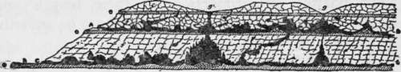

Cave Exploration. Part 2
Description
This section is from the book "Camping And Woodcraft", by Horace Kephart. Also available from Amazon: Camping and Woodcraft.
Cave Exploration. Part 2
The cave district of the Shenandoah Valley, in Virginia, differs from those hitherto mentioned in that the rock, instead of lying in horizontal strata, is folded and uptilted. This peculiarity limits the Virginia caverns to moderate dimensions, but affords extraordinary bases for the growth of alabaster "cascades" and other fantastic formations of dripstone. Here are the far-famed Caves of Luray, which contain the most weird and beautiful grottoes in the known world.
How Caves Are Formed
No one should try to explore a cavern until he has learned how these underground passages are formed. To go ignor-antly into such places is to lose most of their interesting features and to court disaster.
It is a common error to imagine that our caverns have been caused by earthquakes or by volcanic forces. An earthquake may crack great crevices in the crust of the earth, as at New Madrid, in 1811, and at Charleston, in 1886, but these are very narrow in proportion to their length and depth. It never forms vaulted chambers or smoothly rounded passages.
More numerous are the rifts and chasms left by "faults" in the rock where strata have been folded in the slow shrinkage of mountain-building and then have been pulled apart by a subsidence. These, too, are only narrow fissures, and not caves at all.
A volcano may form a sort of cave with its lava when the fluid mass underneath flows away and leaves an arch of its hardened crust in place. Such action is never found save in volcanic countries.
Hot springs or geysers bore channels of escape from their deep reservoirs to the surface. Where the rock is soluble they may eat out large chambers, but they do not excavate lateral galleries.
There is a class of horizontal caves in the faces of cliffs, very common in the Appalachians and in the Southwest, that are called "rock houses." These always are shallow enough to admit daylight throughout their interiors, and they are dry. Their origin is evident. Where an exposed stratum of very soft rock underlies one of hard and impervious material, on the face of a cliff, the soft stone absorbs water, and when this freezes it -is cracked off and disintegrated. The debris is whirled around by the winds and helps to grind out a "room" under the hard ledge that projects like a porch roof over-head. Such places often are used for shelter bj man and beast. They are the "robber caves" and "bear dens" of song and story, but true caverns they are not.
Along the sea-coast are many interesting but shallow grottoes that have been pounded out by rocks hurled by the incoming waves, and worn into curious forms by the restless waters themselves. Neither these nor any of the preceding kinds of natural excavations or fissures are extensive enough to rank with the caverns that abound in limestone formations throughout the earth.
Vast subterranean passages and chambers are formed in limestone by an agency far gentler than any cf those mentioned above.
Fig. 188. Cross section of cavern A B, upper gallery (ancient); g g, sink-holes; C D, lower gallery (modern); h, stream; A, old mouth of cavern; f f f, limestone; C, present mouth of cavern; e e e, hard rock.
First, there must have been at some time a de* ciduous forest, shedding, each autumn, a thick layer of leaves. Upon these leaves the rains fall, and their waters absorb from the decaying vegetation charges of carbonic acid (the same gas that is used in soda fountains). This acidulated water, seeping into crevices in the limestone, dissolves out much of the lime and leaves only a shell of the original rock. Thus the cracks in the surface gradually widen and deepen.
When the rainwater reaches an underlying bed of sandstone, or of some other rock that is not easily dissolved by carbonic acid, its downward course is stayed. Then, under pressure from above, it begins eating and cutting a more or less horizontal course along the underground drainage plane. This mining process is hastened by erosion. Whenever there is a crack or fault large enough to admit a considerable riii of water, sand and gravel are carried below, which, being whirled about in a vortex, rapidly cut the walls of the cave bed. Nodules of flint, washed out from the honeycombed rock above, lend powerful aid to this grinding and drilling process. Thus in time a large chamber is excavated below the main fissure and an underground river finds its channel to some exit which may be miles away.
When a cave chamber forms near the surface of the ground its arch or vault may gradually weaken until it can no longer sustain the weight overhead. It collapses, leaving a pit strewn with rubbish that was formerly the dome of the cave. Slowly some of this rubbish is pulverized and washed away. The edge of the pit wears smooth and sloping sides are formed, tapering downward to a common center. The result finally is a funnel-shaped cavity in the earth that we call a sink-hole.
Abysses
In some districts, as in the cavernous region of Kentucky, these sink-holes, varying greatly in size, may average a hundred to the square mile. Occasionally one will be found that covers several acres and descends gradually to a hundred feet at its throat. The distance thence downward through a pit or dome to the floor below is usually not great, but in some instances exceeds a hundred, or even two hundred, feet. The Devil's Hole, near Fordland, Mo., is so deep that when large logs are tumbled into it they are never heard to strike bottom; but I have not learned of any trustworthy measuring having been done at this place. It is claimed that the famous Rowan Pit in Yorkshire, England, has been descended vertically six hundred feet without finding bottom. How true this may be I do not know. Strange errors have been made by earnest and sincere men in "measuring" pits and caverns. I will quote a remarkable example from Mr. Hovey:
Continue to: